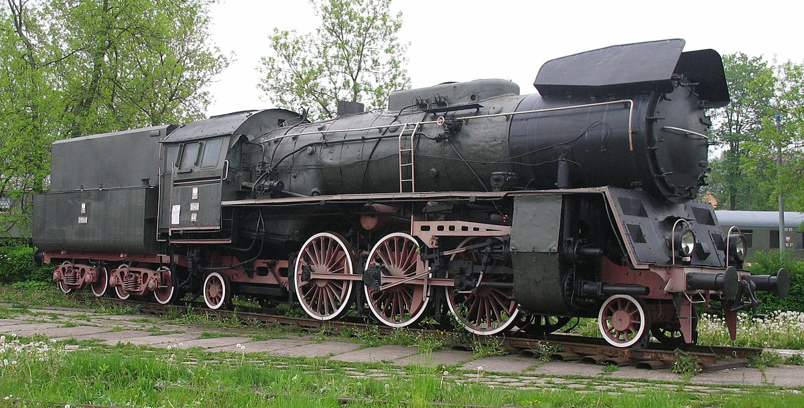

Barwny Świat Polskiej Kolei: Od Parowozów po Pendolino
Polska kolej to fascynujący mikrokosmos, w którym historia spotyka się z nowoczesnością. Na torach naszego kraju każdego dnia zobaczyć można szeroką gamę pojazdów trakcyjnych – od historycznych parowozów, przez wszechobecne lokomotywy elektryczne i spalinowe, aż po nowoczesne elektryczne zespoły trakcyjne, które zrewolucjonizowały komfort podróżowania. Każdy z tych pojazdów ma swoją unikalną historię, specyfikę i rolę w skomplikowanym systemie transportu szynowego.
Pojazdy trakcyjne na polskich torach można podzielić na dwie główne kategorie: lokomotywy, czyli pojazdy przeznaczone do ciągnięcia składów wagonów, oraz zespoły trakcyjne, które stanowią zintegrowane jednostki z własnym napędem i przestrzenią pasażerską. W obu tych grupach znajdziemy pojazdy o napędzie elektrycznym i spalinowym, a w przypadku lokomotyw – również parowym, choć ten ostatni ma już dziś głównie znaczenie historyczne i turystyczne.
Lokomotywy – Siła Pociągowa Polskiej Kolei
Lokomotywy stanowią trzon transportu towarowego oraz obsługują znaczną część dalekobieżnych i regionalnych pociągów pasażerskich. Ich klasyfikacja opiera się zarówno na rodzaju napędu, jak i na przeznaczeniu.
Era Pary – Dziedzictwo i Nostalgia
Choć czas świetności lokomotyw parowych minął bezpowrotnie wraz z postępującą elektryfikacją i wprowadzaniem trakcji spalinowej, ich dziedzictwo jest wciąż żywe. Polska ma bogatą historię produkcji i eksploatacji parowozów.
- Ol49: Parowóz osobowy produkowany w latach 1951-1954, zaprojektowany do obsługi pociągów osobowych i lekkich pospiesznych. Miał on zastąpić wysłużone przedwojenne konstrukcje. Osiągał prędkość 100 km/h i mógł prowadzić składy o masie do 400 ton. Co ciekawe, cztery egzemplarze tych maszyn wyeksportowano do Korei Północnej. Dziś czynne egzemplarze można podziwiać głównie w Parowozowni Wolsztyn, gdzie prowadzą pociągi turystyczne.
- Ty2/Ty42: Jedna z najliczniejszych i najbardziej uniwersalnych serii parowozów towarowych na polskich torach. Były to niemieckie lokomotywy wojenne (Kriegslokomotive BR 52), które po II wojnie światowej masowo trafiły do Polski i były tu również produkowane. Ich prosta i niezawodna konstrukcja sprawdziła się w trudnych warunkach, a one same stały się symbolem powojennej odbudowy polskiego kolejnictwa.
Dziś parowozy można spotkać głównie w skansenach, takich jak ten w Chabówce, oraz na trasach turystycznych, gdzie wciąż budzą zachwyt miłośników kolei.
Elektrowozy – Kręgosłup Zelektryfikowanych Linii
Wraz z postępem elektryfikacji, która rozpoczęła się w Polsce po II wojnie światowej, na torach zaczęły dominować lokomotywy elektryczne. Przez dekady stanowiły one synonim nowoczesności i siły.

- EU07/EP07: To prawdziwa legenda polskich torów i przez lata najpopularniejsza seria lokomotyw pasażerskich. Jej historia sięga lat 60., kiedy to na bazie brytyjskiej licencji (lokomotywy EU06) rozpoczęto w Polsce produkcję uniwersalnych elektrowozów typu 4E. Lokomotywy te, o mocy 2000 kW i prędkości maksymalnej 125 km/h, przez dziesięciolecia prowadziły tysiące pociągów pospiesznych i ekspresowych w całym kraju. Wiele z nich przeszło modernizacje, w wyniku których powstała m.in. seria EP07, dostosowana do prowadzenia pociągów pasażerskich.
- ET22: Potężna, sześcioosiowa lokomotywa towarowa, zaprojektowana do prowadzenia ciężkich składów. Produkowana od końca lat 60. do końca lat 80. we wrocławskim Pafawagu, stała się podstawową lokomotywą w ruchu towarowym na zelektryfikowanych magistralach, zwłaszcza na Śląsku. Jej niezawodność i duża siła pociągowa sprawiły, że do dziś jest ona powszechnie wykorzystywana przez polskich przewoźników towarowych.
- Nowoczesna Generacja – Griffin i Vectron: W ostatnich latach na polskich torach pojawiły się nowoczesne lokomotywy, które wyznaczają nowe standardy. Należą do nich Newag Griffin (EU160), produkowany przez polską firmę Newag, oraz Siemens Vectron, uniwersalna platforma lokomotyw, popularna w całej Europie. Obie konstrukcje charakteryzują się modułową budową, wysoką wydajnością, energooszczędnością oraz są wyposażone w nowoczesne systemy bezpieczeństwa, w tym ETCS. Są one wykorzystywane zarówno w ruchu pasażerskim (PKP Intercity), jak i w dynamicznie rozwijającym się sektorze przewozów towarowych.
Spalinowozy – Niezastąpione na Liniach bez Trakcji
Na licznych liniach kolejowych w Polsce, które nie posiadają sieci trakcyjnej, kluczową rolę odgrywają lokomotywy spalinowe.

- ST44 "Gagarin": Ikona polskiej kolei, ciężka lokomotywa towarowa produkcji radzieckiej (M62). Jej charakterystyczny wygląd i potężny, głośny silnik dwusuwowy sprawiły, że stała się jedną z najbardziej rozpoznawalnych maszyn. Przez lata była niezastąpiona w ciężkim ruchu towarowym na liniach niezelektryfikowanych. Mimo wysokiego zużycia paliwa, wiele z tych lokomotyw po modernizacjach wciąż pozostaje w służbie.
- SU45/SP45: Polska konstrukcja lokomotywy spalinowej do prowadzenia pociągów pasażerskich. Jej produkcja rozpoczęła się pod koniec lat 60. w zakładach HCP w Poznaniu. Przez wiele lat lokomotywy te, znane z charakterystycznego kształtu i malowania, obsługiwały połączenia na głównych niezelektryfikowanych trasach w całej Polsce. Dziś większość z nich została wycofana z ruchu lub zmodernizowana.
- SM42 "Stonka": Najpopularniejsza w Polsce lokomotywa manewrowa, ale wykorzystywana także do prowadzenia lekkich pociągów towarowych i pasażerskich. Produkowana od lat 60. przez Fablok w Chrzanowie, stała się nieodłącznym elementem krajobrazu niemal każdej stacji kolejowej. Jej prosta konstrukcja i wszechstronność sprawiły, że jest eksploatowana do dziś, a wiele egzemplarzy przeszło gruntowne modernizacje.
Elektryczne Zespoły Trakcyjne (EZT) – Era Komfortu i Prędkości
Elektryczne Zespoły Trakcyjne (EZT) to pojazdy, które zdominowały ruch aglomeracyjny i regionalny, a w ostatnich latach, dzięki inwestycjom w nowoczesny tabor, również połączenia dalekobieżne.
EN57 "Kibel" – Niezniszczalna Legenda
To bez wątpienia najbardziej kultowy pojazd na polskich torach. Produkowany przez ponad 30 lat (1962-1993) we wrocławskim Pafawagu, stał się podstawą taboru w ruchu podmiejskim i regionalnym. Jego prosta, ale trwała konstrukcja oraz charakterystyczne wnętrze i dźwięk zamykanych drzwi na stałe wpisały się w pamięć milionów Polaków. Mimo upływu lat, setki zmodernizowanych jednostek EN57 wciąż kursuje na torach, przechodząc liczne modernizacje, które obejmują m.in. wymianę wnętrza, instalację klimatyzacji czy nowoczesnych systemów napędowych.

Nowa Fala – Elf, Impuls, Dart
Wraz z pojawieniem się środków unijnych i rosnącymi wymaganiami pasażerów, na polskie tory wkroczyła nowa generacja EZT, produkowanych głównie przez polskich producentów – Pesa Bydgoszcz i Newag Nowy Sącz.

- Pesa Elf: Rodzina niskopodłogowych EZT, które trafiły do wielu przewoźników samorządowych, znacząco podnosząc komfort podróży.
- Newag Impuls: Pojazdy z tej rodziny zasłynęły nie tylko nowoczesnym designem, ale również rekordami prędkości. W 2015 roku jeden ze składów osiągnął na Centralnej Magistrali Kolejowej prędkość 225,2 km/h, co jest rekordem dla pojazdu polskiej konstrukcji.
- Pesa Dart: Pierwszy polski EZT zaprojektowany specjalnie dla połączeń dalekobieżnych PKP Intercity, charakteryzujący się wysokim komfortem i nowoczesnym wyposażeniem.
ED250 Pendolino – Synonim Prędkości
Wprowadzenie do eksploatacji w 2014 roku dwudziestu pociągów Pendolino serii ED250 było rewolucją w polskich przewozach dalekobieżnych. Te produkowane przez Alstom składy, zdolne osiągać prędkość 250 km/h, skróciły czas podróży między największymi miastami w Polsce i wprowadziły nową jakość w segmencie premium. Choć zakup i eksploatacja Pendolino budziły kontrowersje, nie ulega wątpliwości, że pociągi te stały się symbolem modernizacji polskiej kolei.

Krajobraz polskiej kolei jest niezwykle zróżnicowany i dynamicznie się zmienia. Obok wysłużonych, ale wciąż niezawodnych konstrukcji z czasów PRL, pojawia się coraz więcej nowoczesnych pojazdów, które czynią podróż koleją szybszą, bezpieczniejszą i bardziej komfortową. Ta mozaika taboru jest świadectwem bogatej historii i ambitnych planów na przyszłość polskiego transportu szynowego.